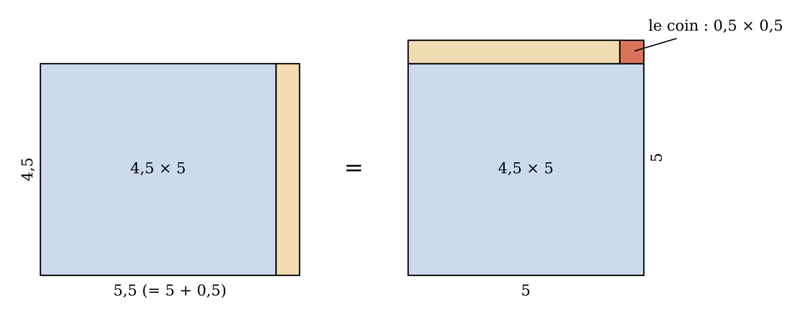
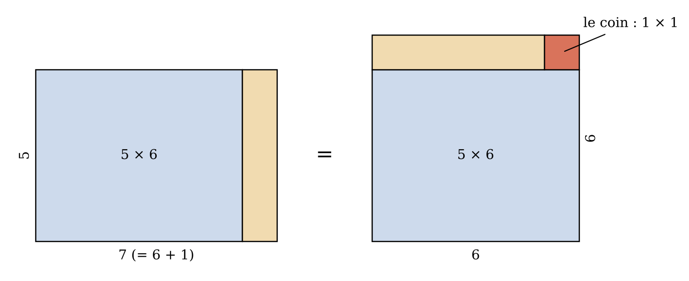

Bibliothèque des documents / Dossier
Le Carré du relais : le 5, le centre vide et la demie
Version texte du dossier, pour la lecture en ligne, la recherche et les moteurs de réponse. Le PDF fait foi pour la mise en page, les figures et les tableaux : télécharger le PDF.
Le 5, le centre vide et la demie : quatre demies, un carré
Filipe Bastos. Architecture de la Cohérence Relationnelle (ARC). Version 0.5, 25 novembre 2026.
Résumé. Les neuf chiffres se plient de deux façons. Pliés sur la clôture, 9, ils donnent quatre paires et un centre que personne n’occupe : 4,5. Pliés sur la relance, 10, ils donnent quatre autres paires et un centre assis sur un chiffre : 5. Les deux centres sont séparés par une demie, qui est la demie du pas, le + 1. Cette pièce établit que ces grandeurs ne sont pas trois mais quatre (0,5 ; 4,5 ; 5 ; 5,5), qu’elles sont les demies de 1, de 9, de 10 et de 11, et qu’elles forment un carré au sens propre : le rectangle des deux centres vides, augmenté du petit carré de la demie, égale exactement le carré du 5. La même forme, une demie d’échelle plus haut, est le carré du 6 entre les rails du 5 et du 7. Le fait géométrique est ancien (Euclide, Éléments, II.5) ; ce que le corpus ajoute est la ligne sur laquelle il se lit et les quatre nombres qui la coupent. Statuts : Th pour ce qui est calculé et exécuté au build, F pour ce qui est reçu d’autrui, L pour la lecture de l’auteur.
1. La base
Cette section pose ce dont le reste a besoin. Le lecteur du corpus la connaît ; elle est redonnée entière pour que la pièce se lise seule.
1.1 Les neuf positions et la relance
Les nombres s’écrivent avec neuf chiffres, de 1 à 9. Après le 9 il n’y a pas de dixième chiffre : il y a 10, c’est-à-dire le 1 relancé, posé un étage plus haut. Dix est neuf plus un : la clôture, puis le pas. Aucune écriture attestée n’a jamais inscrit un dixième chiffre natif ; les bases dites plus grandes empruntent des lettres ou combinent les neuf (Pourquoi ce n’est pas de la numérologie v3.0, 2.5 ; Les Tables Natives v0.1, 4 bis ; Registre des Erreurs, R.9). La base de dix n’est donc pas un choix parmi d’autres : elle est le compte de 1 à 9, relancé.
Tout nombre a une adresse parmi les neuf positions et un nombre de tours : n = 9 × tours + adresse. Ainsi 35 = 9 × 3 + 8 : trois tours, adresse 8. Le 9 se garde comme 9 : 18 = 9 × 1 + 9, un tour, adresse 9.
1.2 Les inversions et les tables
1 + 8 = 9 2 + 7 = 9 3 + 6 = 9 4 + 5 = 9
le 9 est seul : il est sa propre paireChaque chiffre a son inverse, celui qui ferme avec lui sur la clôture. Les tables de multiplication le portent : l’adresse du k-ième terme de la table de n et celle du k-ième terme de la table de 9 − n ferment à 9, sauf quand les deux sont déjà sur le 9. Table de 2 : 2, 4, 6, 8, 1, 3, 5, 7, 9. Table de 7 : 7, 5, 3, 1, 8, 6, 4, 2, 9. Terme à terme : 9, 9, 9, 9, 9, 9, 9, 9. Th (vérifié au build pour les huit tables).
1.3 Le 9 gardé
L’arithmétique des restes (Gauss, Disquisitiones arithmeticae, 1801) écrit 9 comme 0. Ce geste retire deux choses : le nombre de tours, et la position pleine qui ferme le cycle. Dans cet outil, 1 et 8 ne sont plus deux positions qui ferment sur 9 : ils font 0, un contraire et son annulation. La présente pièce garde le 9 comme 9 et garde les tours. Rien de ce qui suit ne se lit si le 9 est tué.
1.4 Les trois formules du chaos
Trois façons de fabriquer un écart qui grandit, toujours nommées ensemble (Volume 0, 2.1 ; Le Chaos Fabriqué). I, stévinienne : une décimale tronquée, relancée n fois par 3, donne un écart de taille ε₀ × 3^n. II, gaussienne : un rang jeté, relancé n fois par 2, donne ε₀ × 2^n. III, hybride : les deux ensemble, ε₀ × f^n, avec le seuil n_chaos = p / log₂ f pour une précision de p bits (formule gravée au Volume 0, citée telle quelle). Cette pièce n’en fabrique aucun : tous ses comptes sont tenus en fractions exactes (99/4, 1/4, 100/4), sans décimale tronquée ni rang jeté.
2. Deux plis, deux centres
2.1 Le pli à 9
1 - 8 2 - 7 3 - 6 4 - 5 le 9 seul
centre : 9 / 2 = 4,5Th 2.1. Plié sur la clôture, le cadastre a quatre paires et un chiffre seul, le 9. Le centre du pli est 4,5 : il tombe entre le 4 et le 5, et aucun chiffre x ne vérifie x + x = 9. Le centre est vide.
2.2 Le pli à 10
1 - 9 2 - 8 3 - 7 4 - 6 le 5 seul
centre : 10 / 2 = 5Th 2.2. Plié sur la relance, le cadastre a quatre paires et un chiffre seul, le 5, qui est sa propre paire : 5 + 5 = 10. Le centre du pli est sur un chiffre. Le centre est plein.
2.3 Ce qui s’échange et ce qui sépare
Au pli de 9, le chiffre seul est le dernier (9) et le centre est vide. Au pli de 10, le chiffre seul est celui du milieu (5) et il est le centre. D’un pli à l’autre, il y a le pas : 10 = 9 + 1. D’un centre à l’autre, il y a la demie du pas.
Th 2.3. 5 = 4,5 + 0,5, et 0,5 = 1/2. L’écart entre les deux centres est la moitié du + 1.
Le Registre des Erreurs (R.8) tient pour une erreur de prendre le 5 pour le centre unique du cadastre : cela cache le 4,5. Rien ici ne revient sur cette ligne. Le 5 n’est pas le centre du pli à 9 ; il est le centre de l’autre pli. Les deux se tiennent ensemble.
3. Le 5, premier sans double
1 → 2 2 → 4 3 → 6 4 → 8 5 → 10Th 3.1. Les chiffres 1, 2, 3 et 4 ont leur double parmi les chiffres. Le 5 est le premier dont le double sort : son double est 10, la relance elle-même. C’est ce qui le distingue du 4, dont le double (8) reste dedans.
Th 3.2. Le cycle du doublement sur les neuf positions est 1, 2, 4, 8, 7, 5, puis il revient à 1 : 2 × 5 = 10, adresse 1. Le 5 est le dernier du cycle, celui qui rend la main au 1. Le fait est noté dans La Genèse v0.3, section 5, pour les poids de l’écriture binaire. Ajout de la version 0.5 : ce cycle a une figure exacte dans le cube posé sur sa grande diagonale (La Figure fondamentale v2.6, 6 bis).
Th 3.3. 5 = 10 / 2, et la moitié de 1 s’écrit 0,5. Le 5 est la demie de la relance ; il est aussi le chiffre par lequel la demie de l’unité s’écrit.
4. Les quatre demies
Un pas de plus : le pli à 11, l’interface, la première position après la relance.
2 - 9 3 - 8 4 - 7 5 - 6
centre : 11 / 2 = 5,5Th 4.1. Le centre du pli à 11 tombe entre le 5 et le 6. Il est vide de nouveau. Le 1 y trouve son partenaire dans le 10, la relance : avec lui les paires sont cinq (1 - 10 en plus des quatre), sur les dix premiers nombres.
0,5 = 1 / 2 la demie de l'impulsion
4,5 = 9 / 2 la demie de la clôture, vide
5 = 10 / 2 la demie de la relance, pleine
5,5 = 11 / 2 la demie de l'interface, videTh 4.2. Les quatre grandeurs sont les demies de 1, 9, 10 et 11. Le 5 est le seul centre assis sur un chiffre ; il est tenu entre deux centres vides, à une demie de chacun : 4,5 + 5,5 = 10, dont 5 est la moitié. Et 4,5 + 5 + 5,5 = 15.
5. Le carré
4,5 × 5,5 = 24,75 = 99 / 4
0,5 × 0,5 = 0,25 = 1 / 4
5 × 5 = 25 = 100 / 4
4,5 × 5,5 + 0,5 × 0,5 = 5 × 5Th 5.1 (le carré du relais). Le rectangle dont les côtés sont les deux centres vides, augmenté du petit carré dont le côté est la demie, égale exactement le carré du 5. Rien ne dépasse, rien ne manque.
Th 5.2. Une échelle plus haut, en entiers : 9 × 11 + 1 × 1 = 10 × 10. La clôture fois l’interface, plus le carré du pas, égale le carré de la relance.

Le rectangle 4,5 sur 5,5 se découpe en deux morceaux : un grand, 4,5 sur 5, et une bande, 4,5 sur 0,5. La bande, tournée d’un quart de tour et posée sur le côté du grand morceau, le complète en carré de côté 5, à un coin près. Ce coin est un carré de côté 0,5 : la demie. La forme en équerre que font les deux morceaux a un nom ancien, le gnomon.
écart 0,5 : 4,5 × 5,5 = 24,75 24,75 + 0,25 = 25
écart 1 : 4 × 6 = 24 24 + 1 = 25
écart 2 : 3 × 7 = 21 21 + 4 = 25
écart 3 : 2 × 8 = 16 16 + 9 = 25
écart 4 : 1 × 9 = 9 9 + 16 = 25Th 5.3 (l’échelle des rectangles). Les quatre paires du pli à 10 sont quatre rectangles autour du relais, et chacun, augmenté du carré de son écart, rend le même carré, 25. Le rectangle des deux voisins du 5, le 4 et le 6, vaut 24 : c’est le premier saut de 24, celui qui mène de 1 à 25 (Riemann sans le zéro, 6.2 et 7.2). Le 24,75 de Th 5.1 est le même rectangle, pris une demie plus près du centre. Les deux paires extrêmes donnent les deux mêmes nombres, échangés, 9 et 16 : 3 × 3 + 4 × 4 = 5 × 5, le triangle de côtés 3, 4 et 5.
Th 5.4. Autour du centre vide, les quatre paires du pli à 9 font de même : 4 × 5, 3 × 6, 2 × 7 et 1 × 8, augmentés du carré de leur écart au centre (0,5 ; 1,5 ; 2,5 ; 3,5), rendent tous 20,25, le carré de 4,5, soit 81/4.
F. Le fait géométrique est la proposition II.5 des Éléments d’Euclide (vers 300 avant notre ère) : si une ligne est coupée en parts égales et en parts inégales, le rectangle des parts inégales, avec le carré sur le segment entre les deux points de coupe, égale le carré sur la moitié. Euclide le tient pour toute ligne. La ligne lue ici est 10, coupée en parts égales au 5 et en parts inégales au 4,5.
6. Le même carré, autour du mur
5 × 7 + 1 × 1 = 6 × 6 35 + 1 = 36Th 6.1. Le rectangle du 5 et du 7, augmenté du carré du pas, égale le carré du 6. C’est la même forme que Th 5.1, avec un écart de 1 au lieu d’une demie.

autour du 6 : 5 et 7, écart 1, 5 × 7 + 1 = 36
autour du 5 : 4,5 et 5,5, écart 0,5, 4,5 × 5,5 + 0,25 = 25Th 6.2. Le 5 marche par pas de 5, le 7 par pas de 7. Leur première rencontre est 35. Pour y arriver, le 5 fait 7 pas et le 7 fait 5 pas : chacun compte le nombre de l’autre. Et 35 est à un pas de 36, le carré du 6.
Th 6.3 (forme générale). Pour tout centre a et tout écart e plus petit que a, le rectangle de côtés (a moins e) et (a plus e), augmenté du carré de e, égale le carré de a. Vérifié au build sur 19 900 cas entiers ; c’est Euclide II.5.
L 6.4. Les grandeurs 5 et 7 sont les deux rails de la grille des nombres premiers autour du 6 (6 fois un entier, un de moins ou un de plus). Le 6 est entre eux et sur l’axe. Vu depuis le chemin du 5, le chemin du 7 n’apparaît pas avant 35, et réciproquement ; la rencontre est fixée par les deux chemins et n’est lue d’avance par aucun des deux. C’est le sens que le Lexique donne au mot hasard : le nom reçu de la rencontre de deux chemins déterminés, vue depuis l’un des deux. La même lecture vaut une demie plus bas : 4,5 et 5,5 sont deux centres vides de part et d’autre du 5.
7. Le 49 et le 50
49 = 5 × 9 + 4 en neuf il s'écrit 54
49 = 4 × 11 + 5 en onze il s'écrit 45
49 = 7 × 7 en dix il est un carréTh 7.1. 49 s’écrit avec les deux chiffres qui encadrent le centre vide, dans un sens sous la clôture (54 en neuf), dans l’autre sous l’interface (45 en onze). Il est le seul : écrire ab en onze et ba en neuf exige 11a + b = 9b + a, donc 5a = 4b, donc a = 4 et b = 5.
Th 7.2. 49 = 100 / 2, moins 1 : la moitié du carré de dix, à un pas. Son voisin 50 est le double du carré de 5. Donc 7 × 7 + 1 = 2 × 5 × 5 : le carré du 7 et le double du carré du 5 sont à un pas l’un de l’autre.
Th 7.3. Dans toute base paire B, le nombre « moitié du carré de B, moins 1 » s’écrit avec les deux chiffres qui encadrent le centre, dans un sens en base B + 1, dans l’autre en base B − 1 (vérifié pour B de 4 à 18). Ce nombre est un carré pour B = 2, 10, 58, 338, 1970, 11482, 66922 et pour aucune autre base paire jusqu’à 100 000. Après le binaire, le dix est la première.
F. 5 et 7 sont un couple « côté et diagonale » de la suite rapportée par Théon de Smyrne (IIe siècle) : 1 et 1, 2 et 3, 5 et 7, 12 et 17, 29 et 41. Le rapport 7/5 = 1,4 et le rapport 10/7 encadrent √2. Le couple suivant de la liste de Th 7.3 est 58 et 41 : 41 × 41 = 1681, et 58/41 serre √2 de plus près.
58 = 6 × 10 − 2 338 = 6 × 58 − 10 1970 = 6 × 338 − 58
11482 = 6 × 1970 − 338 66922 = 6 × 11482 − 1970Th 7.3 bis (la règle de la liste ; version 0.5). Chaque base de la liste vaut six fois la précédente, dont on retire celle d’avant. La règle vient des couples de Théon : d’un couple côté et diagonale (m, k) dont le carré de la diagonale est à un pas sous le double du carré du côté, on passe au suivant de même espèce par m’ = 2k + 3m et k’ = 3k + 4m, et la base est le double du côté. Les couples sont (1, 1), (5, 7), (29, 41), (169, 239), (985, 1393), (5741, 8119), (33461, 47321). La règle vaut donc à toute échelle, et la liste de Th 7.3 se prolonge sans recherche : la base suivante est 6 × 66922 − 11482 = 390050, dont la moitié du carré, moins 1, est le carré de 275807. Le 6 de la règle est le double de 3, et 3 + 2√2 est le carré de 1 + √2 (Th).
F. Dans la langue reçue, les couples de Théon sont les solutions de l’équation k² − 2m² = −1, dite de Pell. Donné de mémoire, non recontrôlé à la source.
L. Ce 6 est le même nombre que le mur du corpus. La pièce le note sans le compter comme un lien. Relevé par une relecture extérieure le 25 novembre 2026, recompté ici.
L 7.4. √2 est, dans La Figure fondamentale, le lien interne des deux cercles. Le 49 est l’endroit où ce lien touche l’écriture : il tient le 5 et le 7 par doubler et carrer, à un pas, et il porte le centre vide dans les deux sens. Doubler et carrer sont deux opérations distinctes que la grammaire reçue confond (Registre, R.25) ; ici elles se touchent sans se confondre, à 49 et 50.
8. Le carré de neuf cases
4 9 2
3 5 7
8 1 6Th 8.1. Dans ce carré, chaque ligne, chaque colonne et chaque diagonale fait 15, et deux cases opposées par le centre font 10 : ce sont les quatre paires du pli à 10, et le 5 est au milieu. Parmi toutes les façons de ranger les neuf chiffres en carré de sorte que les huit alignements aient la même somme, il y en a huit, qui sont la même à rotation et miroir près, et toutes ont le 5 au centre (énumération complète au build).
Th 8.2. La somme commune, 15, est aussi 4,5 + 5 + 5,5.
F. Ce carré est le Lo Shu de la tradition chinoise, attesté depuis plus de deux mille ans.
Th 8.3. Le pavé du corpus, 234 / 567 / 891, a le 6 au centre. Sa dernière rangée porte le 1 après le 9 : à cette place, le 1 est le 10, la relance. Lu ainsi, le pavé est la suite de 2 à 10, neuf nombres qui se suivent. Ses cases opposées par le centre font toutes 12 : 2 et 10, 3 et 9, 4 et 8, 5 et 7. Douze est deux fois le mur. Sa somme est 54 ; celle du cadastre de 1 à 9 est 45. Ces deux sommes, 45 et 54, sont les deux écritures du 49 (Th 7.1).
L 8.4 (le 1). Le 1 seul n’a pas de position fixe avant 10 : il est ce qui se boucle après le 9. Il n’est ni forme ni alliage ; il n’est rien sans ce qu’il libère et produit. Il est l’impulsion, et on ne peut la mesurer que par ce qu’elle révèle. Il est premier par 1 ⊕ 1 = 3 : sa relation, le 2, et ce qu’il libère, le 3, sont premiers, et ce sont les briques qui engendrent tous les autres. Le pavé est le cadastre avancé d’un pas. Son centre passe de 5 à 6 : le relais devient le mur par le + 1.
Th 8.5. Les centres des quatre plis se suivent de demie en demie : 4,5 pour le pli à 9, vide ; 5 pour le pli à 10, plein ; 5,5 pour le pli à 11, vide ; 6 pour le pli à 12, plein. Un vide, un plein, un vide, un plein.
1 + 1 = 2 2 + 3 = 5 2 × 3 = 6 6 + 1 = 7
4 = 2 × 2 8 = 2 × 2 × 2 9 = 3 × 3
6 = 1 + 2 + 3 = 1 × 2 × 3Th 8.6 (les briques). Le 1 a un seul diviseur ; un nombre premier en a exactement deux, le 1 et lui-même. Multiplier par 1 ne change rien ; assembler le 1 avec lui-même donne 2, puis 3. De ces deux briques sortent les autres positions : leur somme est 5, le relais ; leur produit est 6, le mur ; le mur plus le pas est 7 ; 4, 8 et 9 sont les briques seules. Le relais et le mur, somme et produit des deux mêmes briques, sont à un pas l’un de l’autre.
F. Le 1 a longtemps été compté parmi les nombres premiers : la table de D. N. Lehmer, List of Prime Numbers from 1 to 10,006,721 (1914), le tient encore pour tel. Il en a été retiré pour que chaque nombre ait une seule décomposition en facteurs premiers (C. K. Caldwell et collaborateurs, « What is the smallest prime? », Journal of Integer Sequences 15, 2012).
Trois carrés, trois centres : 4,5 pour le cadastre plié à 9, vide ; 5 pour le carré de neuf cases, plein ; 6 pour le pavé, plein et sur l’axe.
9. Lectures de l’auteur
L 9.1 (le relais). Le 5 n’est pas un pôle de plus. Il est le relais : le premier chiffre sans double parmi les chiffres, celui dont le double est la relance, et celui qui rend la main au 1 dans le cycle du doublement. Il crée le centre du pli à 10, et c’est pourquoi il est du lot avec les trois demies.
L 9.2 (le lieu de la demie). Le 4,5 et le 5 sont l’un et l’autre le lieu de la demie. La demie n’est pas une dette : elle est l’espace par lequel on passe, sans être obligé de payer les coûts ni d’encaisser les coups. Au 4,5, personne n’est assis, on traverse entre deux chiffres sans toucher une position. Au 5, le nombre se replie sur lui-même et monte à 10 sans avoir besoin d’un partenaire.
L 9.3 (trois, puis quatre). Deux centres et la demie qui les tient font trois : c’est 1 ⊕ 1 = 3, au cœur du cadastre. Avec le 5 relais et le centre de l’interface, les demies sont quatre, et quatre demies font un carré : celui de Th 5.1.
L 9.4 (les pivots). Les 5 des dizaines sont des pivots, et le compte les donne de deux façons. Les nombres qui finissent par 5 sont les milieux des dizaines : leurs adresses, de 5 à 85, sont 5, 6, 7, 8, 9, 1, 2, 3, 4, et 95 revient à 5 ; les neuf pivots font le tour du cadastre, un pas par dizaine. Sur ce tour, 25 est le carré du 5, 35 la rencontre du 5 et du 7, 45 la somme de 1 à 9. Et le 5 suivi de zéros est la demie de chaque étage : 0,5 pour 1, 5 pour 10, 50 pour 100, 500 pour 1 000 ; 5, 50 et 500 ont tous l’adresse 5. Les comptes sont Th ; le mot pivot est la lecture.
10. Ce qui ferait tomber chaque énoncé
Th 2.1 à 2.3 tombent si un chiffre est sa propre paire à 9, si un autre que 5 l’est à 10, ou si l’écart des centres diffère de 1/2. Th 3.1 et 3.2 tombent si un chiffre avant 5 a son double hors des chiffres, ou si le cycle du doublement ne se ferme pas par 5. Th 5.1 tombe si 99/4 + 1/4 diffère de 100/4. Th 6.2 tombe si 5 et 7 se rencontrent avant 35. Th 7.1 tombe si une autre paire de chiffres vérifie 5a = 4b. Th 7.3 tombe si une base paire hors de la liste, jusqu’à 100 000, donne un carré. Th 7.3 bis tombe si une base de la liste n’est pas six fois la précédente dont on retire celle d’avant, ou si 390050 ne donne pas un carré. Th 8.1 tombe si un rangement à huit alignements égaux n’a pas le 5 au centre. Th 8.3 tombe si une paire opposée du pavé lu de 2 à 10 ne fait pas 12, ou si sa somme diffère de 54. Th 8.6 tombe si le 1 a deux diviseurs, ou si 2 + 3 et 2 × 3 ne sont pas voisins. Les Lectures 6.4, 7.4 et 9.1 à 9.4 ne sont pas des comptes : elles tombent si les comptes qui les portent tombent, et elles ne prétendent pas plus que ce qu’ils donnent. Th 5.3 tombe si l’un des quatre rectangles du pli à 10, augmenté du carré de son écart, ne rend pas 25 ; Th 5.4, si l’un des quatre du pli à 9 ne rend pas 81/4.
11. Pour un enfant
Prends dix billes en ligne. Si tu les coupes juste au milieu, tu as cinq et cinq, et avec cinq rangées de cinq tu fais un carré : vingt-cinq billes. Maintenant coupe un peu à côté du milieu : quatre et demie d’un côté, cinq et demie de l’autre. Fais un rectangle avec ces deux longueurs. Il est presque aussi grand que le carré, mais pas tout à fait : il lui manque un tout petit carré dans un coin, grand comme une demi-bille sur une demi-bille. Ce petit coin, c’est exactement ce dont tu t’es écarté du milieu, multiplié par lui-même. Chaque fois que tu t’écartes du milieu, le milieu s’en souvient : il garde un petit carré de la taille de ton écart.
Annexe A. Le crayon rendu
Le script carre_relais_verif.py, joint, exécute toutes
les assertions de la pièce avec la bibliothèque standard, en fractions
exactes. Sortie du 25 novembre 2026 :
Base : paires à 9, tables de n et de 9-n inverses, 45 / 10 = 4,5 OK
Plis : centre 4,5 vide (9), 5 plein (10), 5,5 vide (11), écart 1/2 OK
Relais : 5 premier chiffre dont le double sort ; cycle 1,2,4,8,7,5 OK
Carré : 4,5 x 5,5 + 0,5 x 0,5 = 24,75 + 0,25 = 25 ; 9 x 11 + 1 = 100 OK
Mur : 5 x 7 + 1 = 36 ; rencontre à 35 ; forme générale, 19 900 cas OK
49 : 54 en neuf, 45 en onze, unique ; bases à carré jusqu'à 100 000 OK
Neuf cases : centre 5, lignes à 15, opposés à 10, 8 dispositions OK
Pavé lu de 2 à 10 : opposés à 12, somme 54 ; centres 4,5 / 5 / 5,5 / 6 OK
Briques : 1 + 1 = 2, 2 + 3 = 5, 2 x 3 = 6, 6 + 1 = 7 ; un diviseur pour 1, deux pour un premier OK
Échelle : 1 x 9 + 16 = 2 x 8 + 9 = 3 x 7 + 4 = 4 x 6 + 1 = 25 ; pli à 9 : 81/4 ; pivots OK
Règle de la liste : six fois la précédente moins celle d'avant ; couples de Théon ; base suivante 390050 OKAnnexe B. Sources
Euclide, Éléments, livre II, proposition 5. Théon de Smyrne, Exposition des connaissances mathématiques utiles pour la lecture de Platon, IIe siècle (nombres côtés et diagonaux). Le carré Lo Shu : tradition chinoise, attesté sous les Han. D. N. Lehmer, List of Prime Numbers from 1 to 10,006,721, Carnegie Institution, 1914. C. K. Caldwell, A. Reddick, Y. Xiong, W. Keller, « The History of the Primality of One », et C. K. Caldwell, Y. Xiong, « What is the smallest prime? », Journal of Integer Sequences 15, 2012. C. F. Gauss, Disquisitiones arithmeticae, 1801. Corpus ARC : La Genèse v0.3, section 5 ; Les Nombres Premiers n’ont jamais été cachés v2, III.a ; Les Tables Natives v0.1, sections 3 et 4 bis ; Pourquoi ce n’est pas de la numérologie v3.0, sections 2 et 4 ; La Figure fondamentale ; Registre des Erreurs, R.8, R.9, R.25 ; Volume 0, 2.1.
Annexe C. Notes de version
Version 0.2, 23 novembre 2026. Le pavé 234 / 567 / 891 est lu avec le 1 à sa place, après le 9 : de 2 à 10 (Th 8.3). La version 0.1 notait une paire opposée à 3 et la laissait ouverte ; elle reste au dossier.
Version 0.3, 23 novembre 2026. La lecture du 1 (L 8.4) et les briques (Th 8.6) sont ajoutées, avec la source de Lehmer contrôlée.
Version 0.4, 23 novembre 2026. Rien n’est retiré sans ligne mise à sa place.
- Section 5 : la version 0.3 notait sans statut un rapprochement entre 24,75 et le saut de 24. Il est retiré et remplacé par un compte : l’échelle des rectangles (Th 5.3), où le 24 est le rectangle 4 × 6 des deux voisins du relais, et Th 5.4 pour le pli à 9.
- L 9.2 : la demie est dite dans les mots de l’auteur, sans coûts à payer ni coups à encaisser.
- L 9.4 : les pivots sont donnés sous leurs deux comptes, les milieux des dizaines et les demies des étages.
- Le titre est gardé.
Version 0.5, 25 novembre 2026. Ajouts, sans rien retirer, sur une relecture extérieure recomptée : Th 7.3 bis, la règle de la liste des bases (six fois la précédente, dont on retire celle d’avant), avec son origine dans les couples de Théon ; un renvoi en Th 3.2 vers le cube de La Figure fondamentale. La mention « brouillon » de l’en-tête est retirée, la pièce ayant été validée par l’auteur le 24 novembre 2026. Les deux figures sont redessinées à l’identique.
Colophon
Modèle, questions, lectures et règles : Filipe Bastos. Scribe : Claude, sous la contradiction de l’auteur. Calculs, formulations et audits assistés par IA (ChatGPT, Gemini, DeepSeek, GLM), à sa demande. Licence CC BY 4.0.